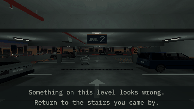

Tutorials › Script a Tutorial Run for an Anomaly Game
How to Script a Tutorial Run for an Anomaly Game in Godot 4
The first levels of a run set in advance, each with a hint for the player, then the draw takes over.

An anomaly game teaches its rule on its first levels: one to learn, one with something plainly wrong, one clean again. This script holds those levels as steps, each an anomaly's id ("" for a clean level) and a hint, and hands them to the loop's queue() on each run's first level. It works out the step from the number of the level the player is on, so whatever begins a new run (a wrong choice, a catch, your menu's Start) begins the tutorial from the top, and a Continue picks it up on the level it loads. A wrong choice or a catch says what was missed; once the last scripted level is left the right way, the tutorial is done and every level is drawn.
Script: anomaly_tutorial.gd (MIT) · Godot 4.3 or newer · its folder on GitHub
How to use it
- Add
anomaly_tutorial.gdto a Node in your level and setloopto your loop's node: it needsqueue(ids),start_floorand the signalsentered_floor(number, anomaly)andchosen(correct, anomaly), withcaught(anomaly)if your loop has one. - Set
stepsto your scripted levels,[[anomaly id, hint], ...]("" for a clean level), andfirst_hintto the hint on the run's first level, which is always clean. - Connect
hintto aLabel("" hides it), andpassedto your save: keepdonethere, and set it back from the save in your level's_ready, before the player is on the run's first level. - A restart from your game's own key or menu makes no choice: hide the hint there yourself; the run's first level then brings the first one.
What it needs
- A loop with
queue(),start_floorand the signals above (the pack's loop has them, and so can yours), and anomalies with anidand, for the hint after a miss, adescription.
Try it free
The Liminal PSX Parking Anomalies Free Sampler has the looping car park and the pack's loop game (version 1.1), with five anomalies on a run of three levels: the tutorial runs on its loop as it is, and an anomaly it queues counts in the draw.
How it was tested
In Godot 4.3 and 4.7.2, on a stand-in loop and on the free sampler's own loop: the run's first level shows the first hint and queues the steps; they come in order, each hint with its level and gone with its choice; a wrong choice or a catch says what was missed and starts the tutorial over; a new run begun mid-tutorial starts it over, and a Continue picks it up on the level it loads; with done set from a save nothing is queued or said; a step that does not fit the run never shows, and the run ends at the way out; on the pack's loop a scripted anomaly counts as shown in the draw.
The code
extends Node
## How to Script a Tutorial Run for an Anomaly Game in Godot 4
## Cordatix Godot 4 PSX tutorials, MIT licensed: https://github.com/GoldenSparrow-Dev/cordatix-godot-psx-tutorials
## The devlog: https://cordatix.itch.io/liminal-psx-parking-anomalies/devlog/1733191/how-to-script-a-tutorial-run-for-an-anomaly-game-in-godot-4-liminal-psx-parking-anomalies-11
## A tutorial run: an anomaly game's first levels set in advance, each with a hint for the player, then the draw. It
## scripts any loop that has queue(ids) (the levels to come after the run's first, which is always clean; "" for a
## clean level), start_floor (the run's first level, the levels counting down from it) and the signals
## entered_floor(number, anomaly) (the player is on a level) and chosen(correct, anomaly); caught(anomaly) too, if it
## has one. It works out the step from the level's number, so a new run (after a wrong choice, after a catch, from your
## menu's Start) begins the tutorial from the top, and a Continue picks it up on the level it loads. Set `steps` and
## `done` any time before the player is on the run's first level (in your level's _ready, from your save). Once the
## player has passed it, every level is drawn.
## Show it on screen ("" hides it).
signal hint(text: String)
## The player has passed the tutorial: keep `done` in your save, so it does not come again.
signal passed
## The loop it scripts.
@export var loop: Node
## The hint on the run's first level, which is always clean.
@export_multiline var first_hint := "Learn this level. If all is well, walk on to the far stairs."
## The levels after the first, in order: [anomaly id ("" for a clean level), its hint].
@export var steps: Array = []
## Shown with the first hint again after a wrong choice or a catch; %s is what the player missed.
@export var missed_hint := "Not quite: %s From the top."
## The tutorial is over (set it from your save before the run reaches its first level).
@export var done := false
var _step := -1 # the step of the level the player is on: 0 the run's first, k the step k
var _missed := "" # what a wrong choice or a catch missed, said on the next level
func _ready() -> void:
loop.entered_floor.connect(_on_entered_floor)
loop.chosen.connect(_on_chosen)
if loop.has_signal("caught"):
loop.caught.connect(_on_caught)
## The player is on a level: its step from its number. On a run's first level the steps are queued, again for every
## new run, so the tutorial starts over from the top.
func _on_entered_floor(number: int, _anomaly) -> void:
if done:
return
_step = loop.start_floor - number
if _step == 0:
var room: int = loop.start_floor - (loop.goal_floor if "goal_floor" in loop else 0) - 1
if steps.size() > room:
push_warning("Tutorial: %d steps, but a run has %d levels after its first" % [steps.size(), room])
var ids := []
for s in steps:
ids.append(s[0])
loop.queue(ids)
if _step < 0 or _step > steps.size():
return # not one of its levels: a run that is not the tutorial's
var text: String = first_hint if _step == 0 else steps[_step - 1][1]
if _missed != "":
text = _missed + "\n" + text
_missed = ""
hint.emit(text)
func _on_chosen(correct: bool, anomaly) -> void:
if done or _step < 0 or _step > steps.size():
return
hint.emit("") # the level's hint goes with the choice; the next level brings its own
if not correct:
_missed = missed_hint % _what(anomaly)
elif _step == steps.size(): # the last scripted level, left the right way
done = true
passed.emit()
## A catch says what caught the player: a danger's description is its rule.
func _on_caught(anomaly) -> void:
if not done:
hint.emit("")
_missed = missed_hint % _what(anomaly)
## What a wrong choice or a catch missed: the anomaly's own description, or that the level was clean.
func _what(anomaly) -> String:
if anomaly == null:
return "nothing was wrong on that level."
var d := str(anomaly.get("description")) if "description" in anomaly else ""
if d == "":
return "something there was not as it should be."
return d[0].to_lower() + d.substr(1)
The devlog and the pack
The step-by-step walkthrough is the devlog How to Script a Tutorial Run for an Anomaly Game in Godot 4 (Liminal PSX Parking Anomalies) on itch.io, written for Liminal PSX Parking Anomalies, a PS1-style asset pack by Cordatix for Godot 4, Unity, Unreal and Blender.